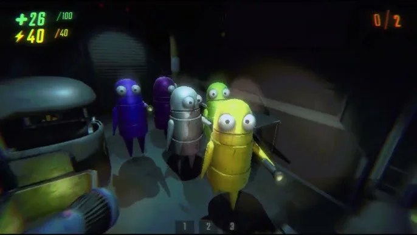
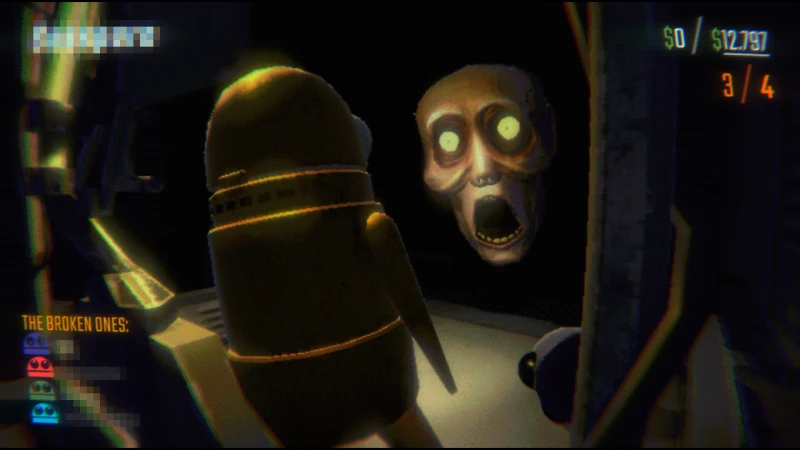
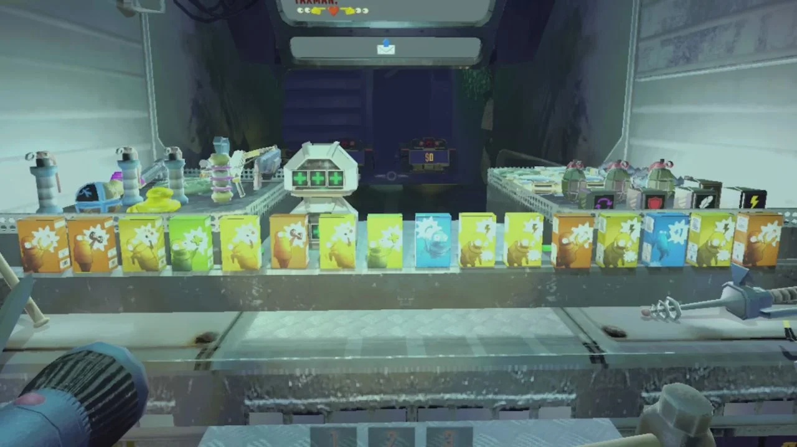
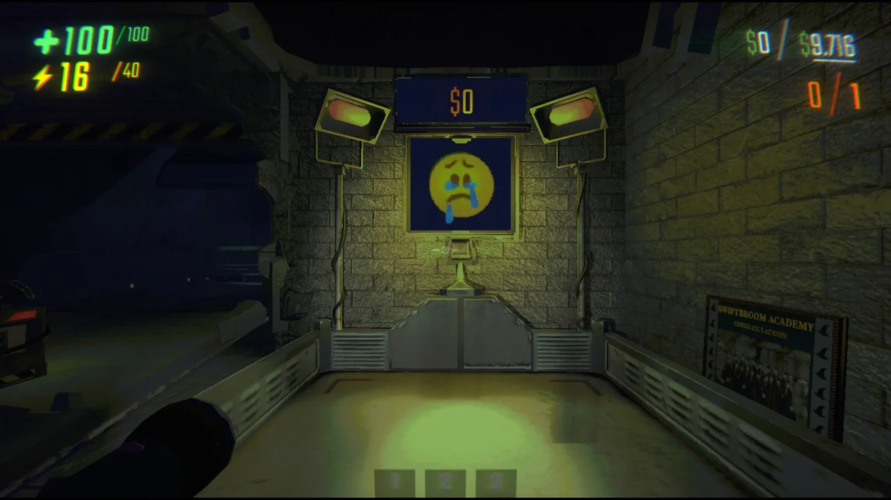
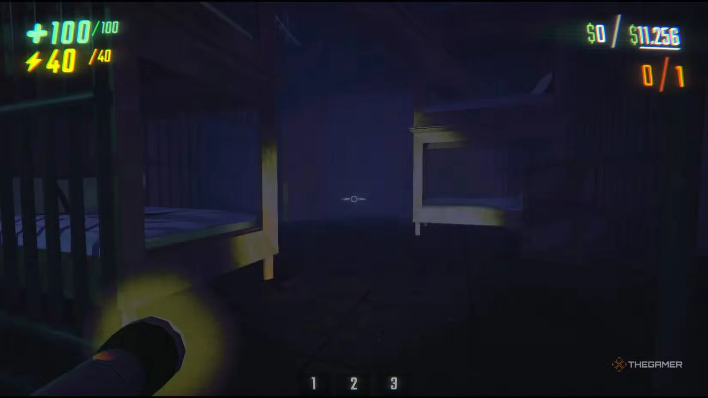

Caractéristiques clés du REPO
Certaines choses que vous devez savoir sur le jeu Repo.
Mode coopératif
Le jeu Repo prend en charge la coopération en ligne pour un maximum de 6 joueurs, leur permettant
de travailler ensemble pour accomplir des tâches, notamment l'extraction et le transport
d'objets tout en évitant les attaques de monstres.

Moteur Physique
Tous les objets du jeu sont influencés par les lois physiques, nécessitant une manipulation
minutieuse pour éviter les dommages. Les joueurs peuvent utiliser des outils tels que des
faisceaux anti-gravité pour manipuler des objets.

Monstres et survie
Le jeu propose 19 types différents de monstres. Les joueurs doivent éviter les attaques en
utilisant furtivement, en se cachant et en utilisant stratégiquement des objets.

Système de mise à niveau
Les joueurs peuvent acheter des améliorations pour améliorer les capacités des personnages,
telles que l'augmentation de la santé, de l'endurance et de la portée de saisie.

Objectifs de la mission
L'objectif principal est d'extraire et de transporter des objets de valeur vers des points
d'extraction désignés pour répondre aux exigences de la mission.

Environnement de jeu
Le jeu se déroule en ruines et dans des bâtiments abandonnés, offrant une variété
d'environnements linéaires et non linéaires qui nécessitent exploration et adaptation.
